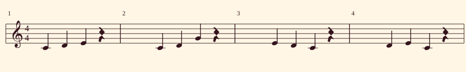
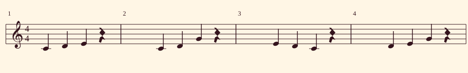
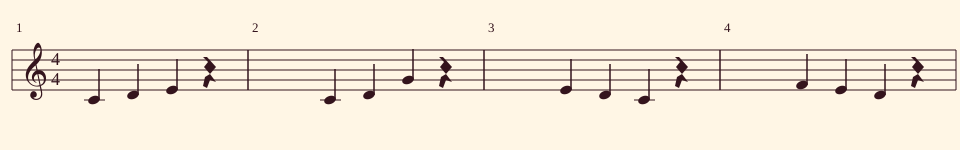

Walamort · C major · 4/4 · quarter note = 90 BPM · four bars · edition 1.0
One motif, three endings
A motif is a short musical idea you can recognize and transform. The first three bars stay the same here; only the fourth changes. Listen before deciding what each ending suggests.
Audio contains melody only: quarter notes and quarter rests, with 8 ms edge fades to reduce clicks. No accompaniment, effects or per-version normalization. Recorded piano samples are trimmed to each duration; this is not a new human performance.
Note names use C4 = MIDI 60. Each cell occupies one quarter note; four cells make a bar.
Ending on C
Returning to C can suggest arrival in this context. It does not mean every melody must end on the tonic.

| Bar | Beat 1 | Beat 2 | Beat 3 | Beat 4 |
|---|---|---|---|---|
| 1 | C4 | D4 | E4 | rest |
| 2 | C4 | D4 | G4 | rest |
| 3 | E4 | D4 | C4 | rest |
| 4 | D4 | E4 | C4 | rest |
Ending on G
Replacing the final C with G changes the contour and may suggest a different sense of continuation. There is no single required listening response.

| Bar | Beat 1 | Beat 2 | Beat 3 | Beat 4 |
|---|---|---|---|---|
| 1 | C4 | D4 | E4 | rest |
| 2 | C4 | D4 | G4 | rest |
| 3 | E4 | D4 | C4 | rest |
| 4 | D4 | E4 | G4 | rest |
Descending ending on D
F–E–D descends by step. Compare its direction with the other endings and describe whether it invites continuation.

| Bar | Beat 1 | Beat 2 | Beat 3 | Beat 4 |
|---|---|---|---|---|
| 1 | C4 | D4 | E4 | rest |
| 2 | C4 | D4 | G4 | rest |
| 3 | E4 | D4 | C4 | rest |
| 4 | F4 | E4 | D4 | rest |
Create your own variation
Which ending feels more conclusive to you, and why? Describe its movement and final note beyond simply liking it.
- Listen to all three and hum the ending without looking at the notes.
- Choose a version and download its JSON. Open the creative studio and use Open project JSON.
- Keep the first twelve beats and change only the final four. Try another final note or a rest.
- Listen and explain the change. Save a copy of your version before experimenting further.
JSON includes an editable C–F–G–C accompaniment that plays in the creative studio. These reference audio files omit it, so playback there can sound different.
Open creative studio →Authorship and samples
Melody, variations and assembly: Walamort, edition 1.0. Piano: VSCO2 / Versilian Studios; Tone.js Instruments distribution and mapping by Nicholaus P. Brosowsky, CC BY 3.0. Durations and levels adapted. Keep these credits when sharing audio.
Full sample-bank credits · Recordings and bank source · CC BY 3.0